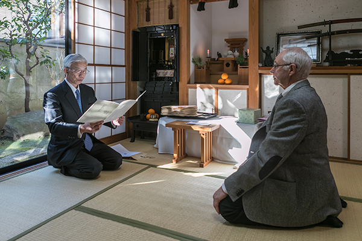
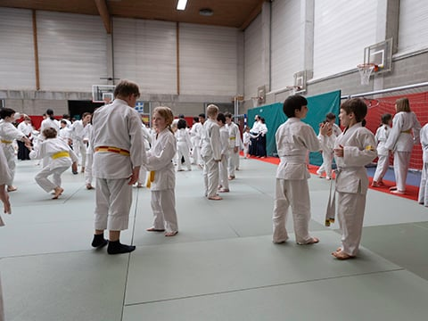
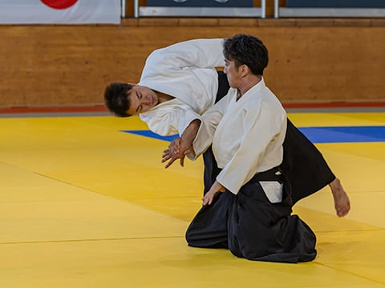

Decouvrir l’Aïkido
L'Aïkido constitue la synthèse de tous les arts martiaux japonais pratiqués par les samouraï depuis plusieurs siècles. Avant la seconde guerre mondiale, l'Aïkido n'était pas accessible au grand public mais seulement réservé à une élite : experts en Budo, nobles, chefs militaires et personnalités d'un certain rang.

Après la guerre, le créateur de l'Aïkido, Maître Morihei UESHIBA, décida que la pratique de l'Aïkido devait s'étendre à tout le Japon et au monde entier. Le centre mondial qui est à Tokyo est maintenant dirigé par Moriteru UESHIBA, le petit-fils de Maître Morihei UESHIBA.
Introduit en France par Maître Minoru Mochizuki en 1951, puis par Maître Tadashi Abe (1952), l'Aïkido est implanté dans tous les pays d'Europe où il ne cesse de se développer.
Pour les enfants :
Ceux-ci apprennent les principes de base, les chutes ainsi que le respect envers les autres grâce au rituel et à l'étiquette propre à l'Aïkido. Ils sont observé et corrigé pendant leur écolage, et ce grâce à l'expérience du professeur et de ses assistants.
C'est un cours, donné avec rigueur et sympathie qui ne laisse aucun élève à l'écart. Chacun apprends donc ainsi plus vite les premières bases de l'Aïkido pour en construire ensuite de plus solides. Le cours "enfants" est accessible dès l'âge de 5 ans, ensuite vers l'âge de 13 ans il pourra rejoindre le cours des adultes avec un sérieux bagage à la clef.

Pour les adultes :

l'Aïkido étant un art martial sans compétition, il s'adresse donc aussi bien aux dames qu'aux homme, sans limite d'âge, pourvu que prédomine en chaque élève la volonté d'accéder à cette souplesse du corps et de l'esprit si nécessaire dans les arts martiaux.
Vous apprendrez également l'esprit d'entraide, le respect mutuel et vous développerez des qualités telles que le contrôle de vos émotions et la maîtrise de soi. L'Aikido est une excellente thérapie contre le stress...